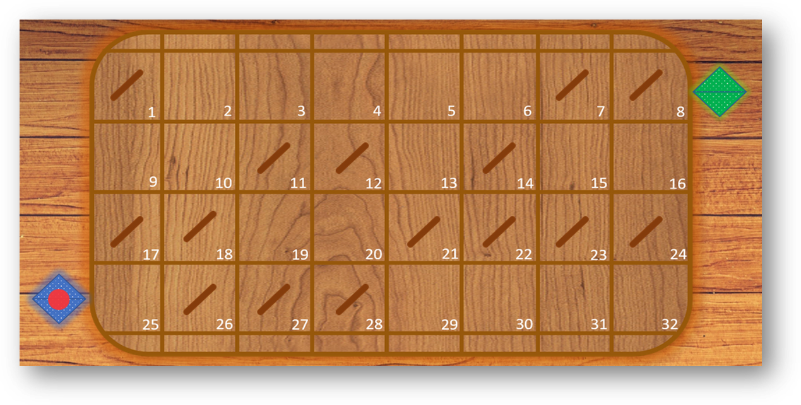
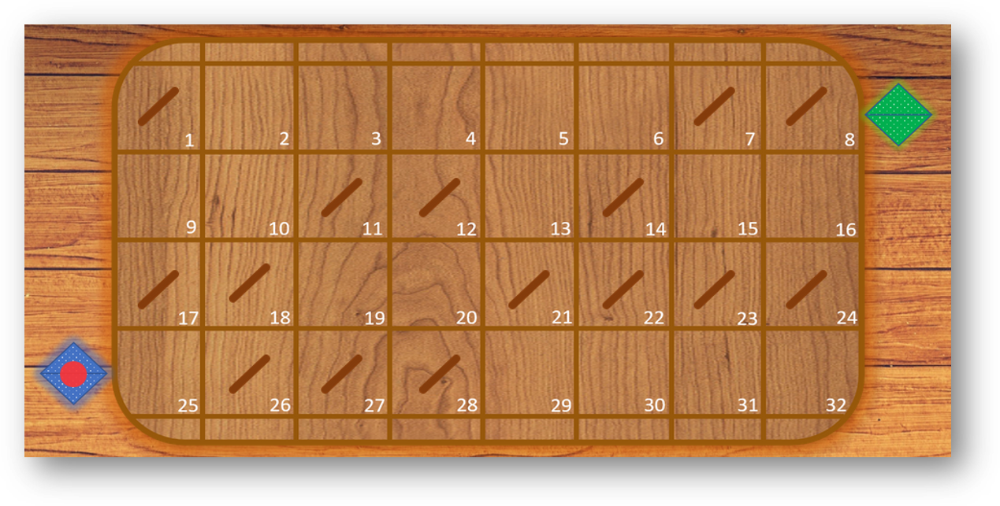

1) Click on the mirrors in the fields, which are located on the playground from 1 to 32.
2) The relevant mirrors (some mirrors are not important for the laser) in the right position will alter the path of the laserbeam.
3) Click on the red dot in the blue field to start the laserbeam.
4) The laserbeam should reach the green field. If reached next level will be loaded.
5) Level 1 to 3 have only one right path. Level 4 has many paths but only one touches the most of the fields which is the goal of this level.
6) To get the highest score try to rotate the relevant mirrors only.

 
